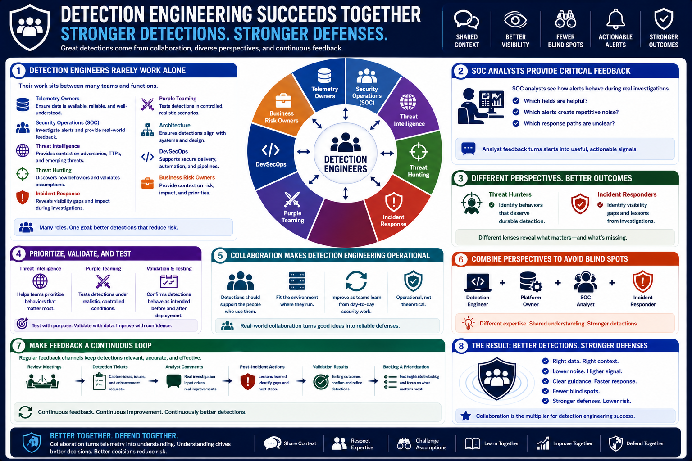

What Is Detection Engineering?
Detection Engineers and Other Security Teams
Connecting to LMS... Progress: in progress
Version 1.0 | Date: 2026-06-16 | Educational overview of defensive detection engineering concepts.

Narration
Detection engineers rarely work alone. Their work sits between telemetry owners, security operations, threat intelligence, threat hunting, incident response, purple teaming, architecture, DevSecOps, and business risk owners.
SOC analysts provide essential feedback because they see how alerts behave during real investigations. They can explain which fields are helpful, which alerts create repetitive noise, and which response paths are unclear.
Threat hunters and incident responders contribute different perspectives. Hunters may identify behaviors that deserve durable detection, while responders may identify visibility gaps discovered during an investigation.
Threat intelligence helps detection teams prioritize behaviors that matter to the organization. Purple team exercises and controlled validation help teams test whether detections behave as intended under realistic conditions.
This collaboration is what makes detection engineering operational instead of theoretical. Detections should support the people who use them, fit the environment where they run, and improve as teams learn from day-to-day security work.
Collaboration also prevents blind spots caused by assumptions. A detection engineer may understand query logic, while a platform owner understands logging behavior, an analyst understands triage pain, and a responder understands incident impact.
When those perspectives come together, the result is usually better than a rule built in isolation. The detection is more likely to have the right data, useful context, realistic thresholds, and clear next steps.
Regular feedback channels make this sustainable. Review meetings, detection tickets, analyst comments, post-incident actions, and validation results can all become inputs to the detection backlog.